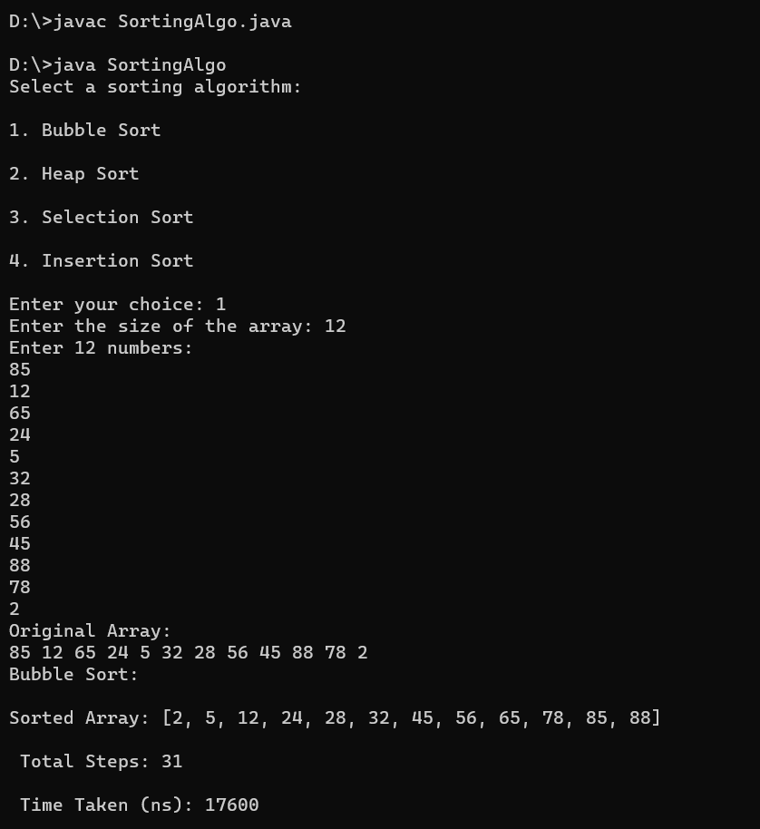
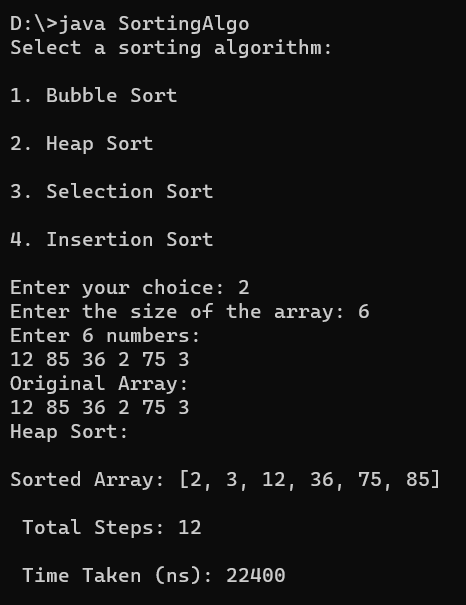
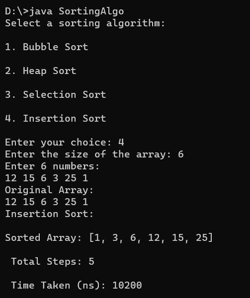
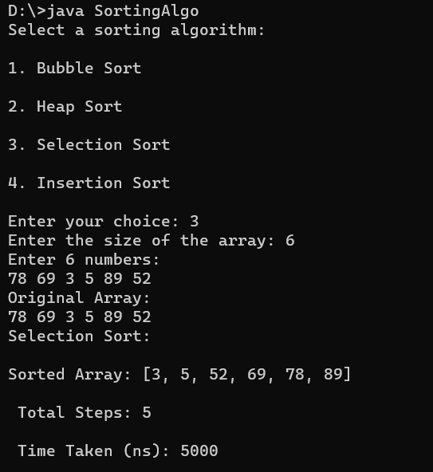

A Java program which allows users to choose from popular sorting algorithms like Bubble Sort, Heap Sort, Selection Sort, and Insertion Sort. Users input the array size and elements, and the program displays the original and sorted arrays, total steps taken, and execution time. The complete code structure uses dedicated functions for each sorting algorithm, enhancing modularity and clarity.
import java.util.Scanner;
import java.util.Arrays;
public class SortingAlgo {
public static void main(String[] args) {
Scanner scanner = new Scanner(System.in);
System.out.println("Select a sorting algorithm: \n");
System.out.println("1. Bubble Sort \n");
System.out.println("2. Heap Sort \n");
System.out.println("3. Selection Sort \n");
System.out.println("4. Insertion Sort \n");
System.out.print("Enter your choice: ");
int choice = scanner.nextInt();
System.out.print("Enter the size of the array: ");
int size = scanner.nextInt();
int[] arr = new int[size];
System.out.println("Enter " +size+ " numbers: ");
for(int i=0; i arr[j + 1]) {
int temp = arr[j];
arr[j] = arr[j + 1];
arr[j + 1] = temp;
steps++;
}
}
}
return steps;
}
public static int heapSort(int[] arr) {
int steps = 0;
int step= 0;
int n = arr.length;
for (int i = n / 2 - 1; i >= 0; --i) {
step = heapify(arr, n, i);
steps = steps + step;
}
for (int i = n - 1; i >= 0; --i) {
int temp = arr[0];
arr[0] = arr[i];
arr[i] = temp;
steps++;
step = heapify(arr, i, 0);
steps = steps + step;
}
return steps;
}
public static int heapify(int[] arr, int n, int i) {
int steps = 0;
int step= 0;
int largest = i;
int left = 2 * i + 1;
int right = 2 * i + 2;
if (left < n && arr[left] > arr[largest]) {
largest = left;
}
if (right < n && arr[right] > arr[largest]) {
largest = right;
}
if (largest != i) {
int temp = arr[i];
arr[i] = arr[largest];
arr[largest] = temp;
steps++;
step = heapify(arr, n, largest);
steps = steps+step;
}
return steps;
}
public static int insertionSort(int[] arr) {
int steps = 0;
int n = arr.length;
for (int i = 1; i < n; ++i) {
int key = arr[i];
int j = i - 1;
while (j >= 0 && arr[j] > key) {
arr[j + 1] = arr[j];
//steps++;
--j;
}
arr[j + 1] = key;
steps++;
}
return steps;
}
public static int selectionSort(int[] arr) {
int steps = 0;
int n = arr.length;
for (int i = 0; i < n - 1; ++i) {
int min_idx = i;
for (int j = i + 1; j < n; ++j) {
if (arr[j] < arr[min_idx]) {
min_idx = j;
}
}
int temp = arr[i];
arr[i] = arr[min_idx];
arr[min_idx] = temp;
steps++;
}
return steps;
}
static void printArray(int[] arr) {
for (int num : arr) {
System.out.print(num + " ");
}
System.out.println();
}
}
1. Bubble Sort
2. Heap Sort
3. Selection Sort
4. Insertion Sort
A Java program that lets you pick and compare common sorting methods like Bubble Sort, Heap Sort, Selection Sort, and Insertion Sort. It's user-friendly, taking array size and elements as input and showing the original and sorted arrays. We also tracks important details like steps taken and execution time, providing a clear picture of each algorithm's performance.